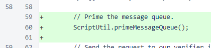
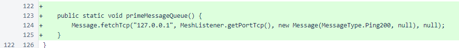

Nyzo version 534 (commit on GitHub) adds priming of the message queue in HashVoteOverrideRequestScript to avoid triggering replay attack protection due to initialization delays.
This version affects HashVoteOverrideRequestScript only.
In some environments, there is a significant delay in sending the first message after program initialization. This delay can be so long that it causes a message to be rejected due to replay protection, as the timestamp of the message is based on when the message is created, not when it is sent. To overcome this, a method has been added to send a dummy message to the loopback address to prime the message system.
In HashVoteOverrideRequestScript, the new ScriptUtil.primeMessageQueue() method is called before any other messages are sent.
The primeMessageQueue() method sends a Ping200 message to the loopback IP address (127.0.0.1). It does not matter whether a socket is listening on the Nyzo port at this address. If a response is received, it is discarded. The action of sending a message, regardless of how simple, causes all necessary initialization to occur and prevents initialization delays when subsequent messages are sent.
